Next: More about contention to
Up: Schedule quality metrics (SQM)
Previous: Discussion on metrics/quality/reward
Contents
Given a utility measure 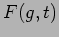 which describes the value of performing group  at time
at time  , the potential utility metric is the sum of the individual values of 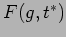 for each group execution window on the night 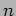 containing at the time 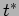 which maximizes for that group. In other words it is the total utility which could be achieved that night if all feasible groups were executed at their optimum time. In reality it may not actually be possible to achieve this as several groups could be optimal at the same time or overlapping times. Also if the total execution time potential for the night exceeds the available night-time hours it ill not be possible even without overlaps. The metric can of course be scaled by a factor
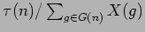. The perrormance metric then becomes
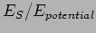 where
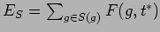.
, the potential utility metric is the sum of the individual values of 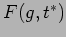 for each group execution window on the night 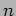 containing at the time 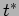 which maximizes for that group. In other words it is the total utility which could be achieved that night if all feasible groups were executed at their optimum time. In reality it may not actually be possible to achieve this as several groups could be optimal at the same time or overlapping times. Also if the total execution time potential for the night exceeds the available night-time hours it ill not be possible even without overlaps. The metric can of course be scaled by a factor
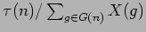. The perrormance metric then becomes
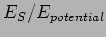 where
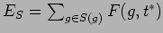.
Steve Fraser
2008-01-31